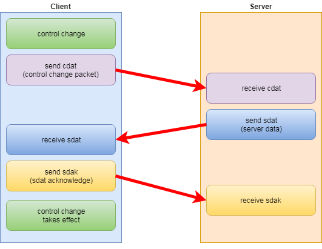
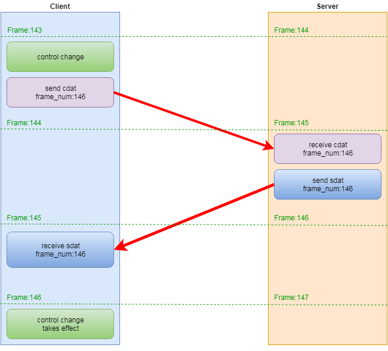

Purple Martians
Technical Code Descriptions
Netgame - Main
Overview
There are two methods used simultaneously in netgame:
- game move sync
- state correction
Game move sync relies on the game being perfectly deterministic. (The same set of inputs will produce the exact same results).
All that is needed is to replicate the same set of inputs across all the clients.
For a long time, game move sync was the only approach I used, and it almost worked perfectly.
But when it didn't, all was lost. The game would go out of sync between server and client and become unplayable.
I spent years refining and troubleshooting, added a very complex logging system, replaced floats with fixed points...
I failed. I could not get it to work reliably enough.
I came upon the second method, state correction, while I was adding code to check if the game had gone out of sync.
I was having the server send player state info to the clients and having them check if that agreed with their local state.
Eventually I expanded this method to send the entire game state periodically, and just overwrite the clients state.
That fixed any drift or loss of sync that occured with the first method.
Both methods are used at the same time.
Game move sync happens fast, it can send data from client to server and back in a few frames.
State correction takes care of any small drift that might occur, it occurs much less frequently but sends a large amount of data when it does.
Game Move Sync
To ensure that all players (server and clients) have the same game state, all they need is the same set of inputs.
The game_moves array is an array containing every player's inputs, indexed by player number and the frame number when a control change occurred.
The state of the controls is not stored every frame, only when a control change occurs.
Every player (server and clients) should have an identical copy of the game moves array.
The server has the master array and syncs that to each client independantly.
When a client's controls change, those changes are sent to the server, put in the master array, then sync'd back to every client.
- client presses a control
- client sends a packet with that data to the server
- server puts it in the master game_moves array
- master game_moves array is synced back to the client
- the client moves by reading the game move from its locally synced game_move array

This requires that the clients run slightly behind the server. (default is 1 frame or 25ms)
This means there is a delay between when the client presses a control and when the client responds but it is small enough to be barely noticeable.
Client sends control change
The part where a client sends a control change to the server is very simple:
The client checks to see if its controls have changed from the last frame.
If the client's controls have changed, the client sends a 'cdat' packet to the server like this:
void client_local_control(int p)
{
set_comp_move_from_player_key_check(p);
if (players1[p].old_comp_move != players1[p].comp_move) // players controls have changed
{
players1[p].old_comp_move = players1[p].comp_move;
Packet("cdat");
PacketPut1ByteInt(p);
PacketPut4ByteInt(frame_num + control_lead_frames);
PacketPut1ByteInt(players1[p].comp_move);
ClientSend(packetbuffer, packetsize);
}
}
Server receives control change
When the server receives a 'cdat' packet from a client:
- the server checks to see if the data is old (contains a frame_num that has already passed on the server)
- if the data is good, it is added to the server's master game moves array
- if the data is old, it is discarded and an error is incremented
If the data is discarded, this is will not cause any sync issues, it will be as if the client never pressed the control at all.
The most common reason for cdat's arriving late are the client lagging too far behind server.
if(PacketRead("cdat"))
{
int p = PacketGet1ByteInt();
int pc = PacketGet4ByteInt();
int cm = PacketGet1ByteInt();
// how far ahead is the client's frame_num for this move, compared to server's frame_num
int c_sync = players1[p].c_sync = pc - frame_num;
if (c_sync >= 0) add_game_move(pc, 5, p, cm); // add to game_move array
else players1[p].c_sync_err++; // unless late, then drop and inc error
}
Server sends game move data to clients
The server synchronizes its master game moves array to each client independantly.
The server knows how many game moves are in its master array with the global int 'game_move_entry_pos'.
The server also tracks the last acknowledged 'game_move_entry_pos' for each player in the player structure.
Every frame the server checks each client to see if there is un-acknowlegded game moves to send.
If there is data to send, the server sends a 'sdat' packet with the needed data to that client.
void server_send_sdat(void)
{
for (int p=1; p < NUM_PLAYERS; p++)
if (players[p].control_method == 2)
{
if (players1[p].game_move_entry_pos < game_move_entry_pos) // client needs more data
{
int start_entry = players1[p].game_move_entry_pos;
int end_entry = game_move_entry_pos;
int num_entries = end_entry - start_entry;
if (num_entries > 100) num_entries = 100;
// to prevent multiple resends of exact same data
if ((players1[p].server_last_sdat_sent_start != start_entry) || // different start pos
(players1[p].server_last_sdat_sent_num != num_entries)) // different num entries
{
players1[p].server_last_sdat_sent_start = start_entry;
players1[p].server_last_sdat_sent_num = num_entries;
Packet("sdat");
PacketPut1ByteInt(p);
PacketPut4ByteInt(frame_num);
PacketPut4ByteInt(start_entry);
PacketPut1ByteInt(num_entries);
for (int x=start_entry; x < start_entry + num_entries; x++)
{
PacketPut4ByteInt(game_moves[x][0]); // frame_num
PacketPut1ByteInt(game_moves[x][1]); // type
PacketPut1ByteInt(game_moves[x][2]); // data 1
PacketPut1ByteInt(game_moves[x][3]); // data 2
}
ServerSendTo(packetbuffer, packetsize, players1[p].who, p);
}
}
}
}
If the server receives an 'sdak' packet (sdat acknowledge), it sets the new acknowledged 'game_move_entry_pos' for that client.
if(PacketRead("sdak"))
{
int p = PacketGet1ByteInt();
players1[p].game_move_entry_pos = PacketGet4ByteInt();
}
Client receives game move data from server
When a client receives game move data from the server, it adds it to its own local game moves array and sends an acknowledgement of the last entry received.
if(PacketRead("sdat"))
{
int start_entry = PacketGet4ByteInt();
int num_entries = PacketGet1ByteInt();
int nep = start_entry + num_entries; // new entry position
if (nep > game_move_entry_pos) // only enter if they are newer
{
for (int x=start_entry; x < nep; x++)
{
game_moves[x][0] = PacketGet4ByteInt();
game_moves[x][1] = PacketGet1ByteInt();
game_moves[x][2] = PacketGet1ByteInt();
game_moves[x][3] = PacketGet1ByteInt();
game_move_entry_pos++;
if ((game_moves[x][0] - frame_num) < 0) // game move arrived too late to be applied
{
// bad error, will cause sync loss
}
}
}
Packet("sdak"); // send acknowledgement of game moves received
PacketPut4ByteInt(nep);
ClientSend(packetbuffer, packetsize);
}
When a game move entry is added, the frame_num of the new move is compared to the client's current frame_num.
If the newly entered game move is marked with a frame_num that has already occured on the client, an error is raised.
This is a particularily bad error. It means that a game move has been applied on the server, but arrived too late to be applied on the client.
This will definitely cause the client to be out of sync.
Timing
Timing is critical in netgame. The server is the master timing source, and should run at 40fps.
Clients adjust their speed to maintain a slight delay behind the server.
The delay is measured in frames and is controlled by the global int 'server_lead_frames'.
It can be changed in the config file, but should be left at its default of 1 frame (25ms).
The client's timing control is adjusted like this:
- the server sends 'sdat' packets to clients when it has data to send (or periodically for sync if it has no data to send)
- client receives an 'sdat' packet from the server
- embedded in the packet is the server's frame_num of when the packet was sent
- the client compares this to its own frame number and adjusts its fps timer
if(PacketRead("sdat"))
{
int sdat_frame_num = PacketGet4ByteInt();
players1[p].server_sync = sdat_frame_num - frame_num;
int fps_chase = frame_speed + players1[p].server_sync - server_lead_frames;
al_set_timer_speed(fps_timer, ( 1 / (float) fps_chase));
}
Control lead frames
There is an inherent delay in the client's control scheme.
This is because the clients need to send their control changes through the server.

To facilitate this, the control changes are sent with their frame_num modified to be in the future.
Then they can make the the round trip through the server and still get back before it's time to apply them.
void client_local_control(int p)
{
set_comp_move_from_player_key_check(p);
if (players1[p].old_comp_move != players1[p].comp_move) // players controls have changed
{
players1[p].old_comp_move = players1[p].comp_move;
Packet("cdat");
PacketPut1ByteInt(p);
PacketPut4ByteInt(frame_num + control_lead_frames); // add control_lead_frames to frame_num
PacketPut1ByteInt(players1[p].comp_move);
ClientSend(packetbuffer, packetsize);
}
}
The global variable 'control_lead_frames' is set in the config file, but should be left at its default value of 3.
Any lower than 3 and sometimes the data will not return in time.
At settings higher than 3, the control lag becomes more noticeable.
I have found 3 to be a good compromise. 3 frames is 75ms which is a barely noticeable control lag, and late cdats are very rare.
To make things fair for all players, the server has the same delay applied to its control changes.
void server_local_control(int p)
{
set_comp_move_from_player_key_check(p);
if (players1[p].comp_move != players1[p].old_comp_move) // players controls have changed
{
players1[p].old_comp_move = players1[p].comp_move;
int fpc = frame_num + control_lead_frames; // add control_lead_frames to frame_num
add_game_move(fpc, 5, p, players1[p].comp_move);
}
}
Player numbers
There are data structures for 8 players, numbered from 0-7.
- single player is always player 0
- server is always player 0
- clients can be from 1-7
The global variable 'active_local_player' points to the the local player.
Player's control methods
An integer in the player structure:
int players[p].control_method;
0 = local player in single player mode
1 = file play (run demo game from file)
2 = in netgame, any non-local player (client players on server, and server and other clients on client)
3 = in netgame, local server player on server
4 = in netgame, local client player on client
99 = in netgame, used client in current level (to prevent re-use in same level)
Netgame status variables - server_game_moves_sync
Description
When the server receives a 'cdat' packet with a client's game_move data, it is supposed to be tagged with a future frame_num.
This is required so that there is time to sync the game_move back to the clients before its frame_num expires.
server_game_moves_sync is how many frames the client's game_move data is ahead of the server's frame num.
If it is greater than zero, this is normal.
If it is exactly zero, the game_moves are arriving on the exact frame they are needed. This is cutting it very close.
If it is less than zero:
- the game move is late and will be discarded
- server_game_moves_sync_err will be incremented
- the move data is discarded (it will be as if the client never made the move)
- this should not make the game go out of sync as all players states will still be the same
Variables
Server: (for each player)
players1[p].server_game_move_sync = 0;
players1[p].server_game_move_sync_min = 99;
players1[p].server_game_move_sync_err = 0;
Client:
players1[p].serr_c_sync_err
players1[p].server_game_move_sync_err is synced back to the client with the 'serr' packet, where it is saved as players1[p].serr_c_sync_err.
That way the client can know that the server dropped one of their 'cdat' packets because it was received too late.
Code
if(PacketRead("cdat"))
{
int p = PacketGet1ByteInt();
int fn = PacketGet4ByteInt();
int cm = PacketGet1ByteInt();
// how far ahead is the client's frame_num for this move, compared to server's frame_num
int c_sync = players1[p].server_game_move_sync = fn - frame_num;
// keep track of the minimum c_sync
if (c_sync < players1[p].server_game_move_sync_min) players1[p].server_game_move_sync_min = c_sync;
if (c_sync >= 0) add_game_move(fn, 5, p, cm); // add to game_move array
else // unless late, then drop and inc error
{
players1[p].server_game_move_sync_err++;
Packet("serr"); // server error
PacketPut1ByteInt(p);
PacketPut1ByteInt(1); // error type 1
PacketPut4ByteInt(frame_num);
PacketPut4ByteInt(c_sync);
PacketPut4ByteInt(players1[p].server_game_move_sync_err);
ServerSendTo(packetbuffer, packetsize, who, p);
}
}
Netgame status variables - client_game_moves_sync
Description
When a client receives an 'sdat' packet with game_moves, they are entered in the client's game_move array.
If their frame_num is earlier than the client's current frame_num an error is flagged.
This means that the client has received a game_move that happened in the past.
The move will be applied on the server, but will never be applied on the client because it was received too late.
This will definitely cause the client to go out of sync.
Variables
Client:
players1[p].client_game_move_sync;
players1[p].client_game_move_sync_min;
players1[p].client_game_move_sync_err;
Code
cs = g0 - passcount; // client_game_moves_sync
players[p].client_game_moves_sync = cs; // set in player struct
if (cs < 0 ) players[p].client_game_moves_sync_err++; // check for error
if (cs < players[p].client_game_moves_sync_min)
players[p].client_game_moves_sync_min = cs; // check and set min
Netgame status variables - server_sync
Description
When the server gets an "sdak" packet from a client, it contains the client frame_num.
The server keeps track of server_sync for each client like this:
players1[p].server_sync = frame_num - client_fn; // set server_sync in player struct
Variables
Server:
players1[p].server_sync (for each client)
Code
if(PacketRead("sdak"))
{
int p = PacketGet1ByteInt();
int client_fn = PacketGet4ByteInt();
players1[p].server_sync = frame_num - client_fn; // set server_sync in player struct
}
server_sync is used to control when clients come active, when joining.
if ((players[p].control_method == 2) && (players1[p].server_sync < 4) && (players1[p].server_sync > -2))
{
add_game_move(frame_num + 4, 1, p, players[p].color); // player becomes active in 4 frame!
}
server_sync is also used to drop clients when their sync goes bad.
void proc_player_drop(void)
{
for (int p=1; p < NUM_PLAYERS; p++)
if (players[p].control_method == 2)
{
if ((players[p].active) && (players1[p].server_sync > 100)) // drop player
{
add_game_move(frame_num + 4, 1, p, 71); // make client inactive (reason sync > 100)
}
}
}
Netgame status variables - client_sync
Description
When the client receives an sdat packet, the frame_num sent by the server is compared the client's frame_num.
players1[p].client_sync = sdat_frame_num - frame_num;
This is used by the client to adjust its fps_timer, to stay 1 frame behind the server.
Variables
Client:
players1[p].client_sync (only for local client player)
Code
if(PacketRead("sdat"))
{
int sdat_frame_num = PacketGet4ByteInt();
players1[p].client_sync = sdat_frame_num - frame_num;
int fps_chase = frame_speed + players1[p].client_sync - server_lead_frames;
al_set_timer_speed(fps_timer, ( 1 / (float) fps_chase));
}
Netgame config variables
These are all in pm.cfg:
[NETWORK]
server_IP=192.168.1.3
TCP=0
deathmatch_pbullets=1
deathmatch_pbullets_damage=5
suicide_pbullets=1
control_lead_frames=3
server_lead_frames=1
stdf_freq=5
zlib_cmp=7
server_IP=192.168.1.3
---------------------
clients need to know the server IP or hostname to connect
servers dont need to know anything, or have anything set
TCP=0
-----
TCP or UDP
TCP = 0; // UDP
TCP = 1; // TCP
Both seem to work about the same.
deathmatch_pbullets=1
---------------------
can player's bullets hurt other players?
deathmatch_pbullets_damage=5
----------------------------
player's bullet damage amount
suicide_pbullets=1
------------------
can players hurt themselves with their own bullets?
For the variables below, it is not recommended to change them from their defaults.
control_lead_frames=3
---------------------
when client's controls change and cdat is sent to server tag input with a frame this far in the future
server_lead_frames=1
--------------------
the client will adjust frame rate to maintain a lag of this many frames behind the server
chdf_freq=5
-----------
how often the server sends chdf packets to clients
zlib_cmp=7
----------
zlib compression level
Packets used for game move sync
Packet: 'cdat'
description: 'client data'
direction: client to server
- 1 byte (player)
- 4 bytes (client frame_num of control change)
- 1 byte (comp move of control change)
Packet: 'sdat'
description: 'server data
sent from server to client
header:
-----------------------------
- 4 bytes (server frame_num)
- 4 bytes (game_moves start entry)
- 1 byte (number of entries)
and then one or more entries:
-----------------------------
- 4 bytes (game_moves[x][0]); // frame_num
- 1 byte (game_moves[x][1]); // type
- 1 byte (game_moves[x][2]); // data 1
- 1 byte (game_moves[x][3]); // data 2
Packet: 'sdak'
description: 'sdat acknowledge'
direction: client to server
- 1 byte (player)
- 4 bytes (client frame_num)
- 4 bytes (game_moves new entry position)
- 4 bytes (chdf late count)
- 4 bytes (frames skipped count)
All Packets
Packet: 'cdat'
description: 'client data'
direction: client to server
- 1 byte (player)
- 4 bytes (client frame_num of control change)
- 1 byte (comp move of control change)
Packet: 'sdat'
description: 'server data
sent from server to client
header:
-----------------------------
- 4 bytes (server frame_num)
- 4 bytes (game_moves start entry)
- 1 byte (number of entries)
and then one or more entries:
-----------------------------
- 4 bytes (game_moves[x][0]); // frame_num
- 1 byte (game_moves[x][1]); // type
- 1 byte (game_moves[x][2]); // data 1
- 1 byte (game_moves[x][3]); // data 2
Packet: 'sdak'
description: 'sdat acknowledge'
direction: client to server
- 1 byte (player)
- 4 bytes (client frame_num)
- 4 bytes (game_moves new entry position)
- 4 bytes (chdf late count)
- 4 bytes (frames skipped count)
Packet: 'serr'
description: 'server error'
direction: server to client
- 1 byte (error type)
- 4 bytes (server frame_num)
- 4 bytes (server c sync)
- 4 bytes (server c sync errors)
Packet: 'stdf'
description: 'state dif'
direction: server to client
- 4 bytes (source frame_num)
- 4 bytes (destination frame_num)
- 1 byte (packet sequence num)
- 1 byte (packet sequence total)
- 4 bytes (data start byte)
- 4 bytes (data size)
Packet: 'stak'
description: 'state dif acknowledge'
direction: client to server
- 1 byte (player)
- 1 byte (diff corr)
- 4 bytes (client frame_num)
Packet: 'CJON'
description: 'client join'
direction: client to server
- 1 byte (requested color)
- 16 bytes (client hostname)
Packet: 'SJON'
description: 'server join'
direction: server to client
- 2 bytes (play level)
- 4 bytes (server frame_num)
- 4 bytes (server game_move entry position)
- 1 byte (frame speed)
- 1 byte (player number)
- 1 byte (player color)
- 1 byte (deathmatch_pbullets)
- 1 byte (deathmatch_pbullets_damage)
- 1 byte (suicide_pbullets)